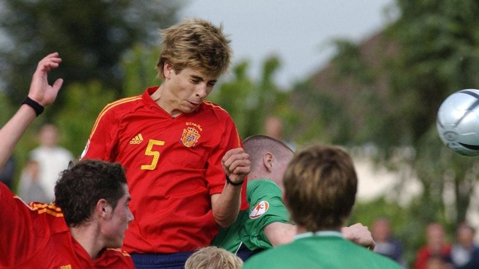

Youth Teams
Piqué was a member of the Spain under-19 team that won the 2006 UEFA European Under-19 Championship in Poland. In a 2–1 final win against Scotland,  Piqué put in a strong performance in defence and also contributed in attack, hitting the crossbar with a header and providing the assist for striker Alberto Bueno to score Spain's second goal. Subsequently, he played in the 2007 FIFA U-20 World Cup, starting all six of Spain's matches and scoring a goal in the team's come-from-behind 4–2 victory over Brazil in the round of 16. However, Piqué missed the deciding penalty in the shoot-out against the Czech Republic, and Spain was eliminated at the quarter-final stage.
Senior Team
On 6 February 2009, Piqué was called up to the senior squad for the friendly against England on 11 February. He played the entire match in a 2–0 win, in Seville. In his second match as an international on 28 March 2009, he was called up as a replacement for injured teammate Carles Puyol and he scored the only goal in Spain's victory in the 2010 World Cup qualifier against Turkey at the Santiago Bernabéu Stadium in Madrid. Piqué made his tournament debut for Spain at the 2009 FIFA Confederations Cup, starting in four of the team's five matches as La Roja finished in third place. Piqué was Spain's first-choice centre-back at the 2010 World Cup finals in South Africa, playing alongside Puyol. He started all seven matches as Spain won the tournament, defeating the Netherlands 1–0 in the final. Piqué's partnership with Puyol saw Spain concede only twice in seven World Cup matches and keep four consecutive clean sheets in the knockout stage. In Spain's 1–0 group stage defeat to Switzerland, just before Gelson Fernandes scored the only goal of the game, Swiss striker Eren Derdiyok tumbled over Spain goalkeeper Iker Casillas and accidentally kicked Piqué in the face, knocking him over and leaving him with a deep cut beside his right eye. Piqué played every minute of Spain's UEFA Euro 2012 campaign, partnering Sergio Ramos in the centre of defence. He successfully converted the team's third penalty in a semi-final shoot-out win over Portugal. In the final, Spain recorded a fifth consecutive clean sheet in a 4–0 win over Italy. Piqué was one of three Spanish defenders included in UEFA's Team of the Tournament as La Roja conceded only one goal in six matches. At the 2013 FIFA Confederations Cup, Piqué was the third of Spain's seven successful takers in a 7–6 shootout win over Italy at the semi-final stage. On 30 June 2013, Piqué was sent off during the final against Brazil. He received a straight red card in the 68th minute for a violent tackle on recently signed Barcelona teammate Neymar. The match finished 3–0 to Brazil, ending Spain's world record 29 match unbeaten run in competitive internationals. In Spain's opening group game of UEFA Euro 2016 on 13 June, Piqué scored his fifth goal for his country, a late header in a 1–0 victory against the Czech Republic. In Spain's second group match of the 2018 FIFA World Cup on 20 June, a 1–0 win against Iran, Piqué made his 100th international appearance. On 11 August 2018, Piqué announced his retirement from international football.
| National Team | Year | Appearances | Goals |
| Spain | 2009 | 13 | 4 |
| Spain | 2010 | 16 | 0 |
| Spain | 2011 | 8 | 0 |
| Spain | 2012 | 11 | 0 |
| Spain | 2013 | 11 | 0 |
| Spain | 2014 | 6 | 0 |
| Spain | 2015 | 8 | 0 |
| Spain | 2016 | 12 | 1 |
| Spain | 2017 | 9 | 0 |
| Spain | 2018 | 8 | 0 |